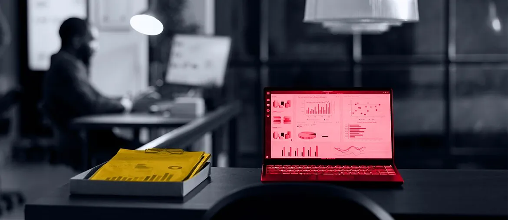

Outstaffing for Web App Development
Node.js microservices, SQL and NoSQL work, and event sourcing helped a finance team move faster.
Read case studyDuckDuckGo is moving fast across private search, Duck.ai, subscriptions, ads, and browser protections. That work needs backend focus while leadership hiring takes time.
Saw the Engineering Director, Backend role. It points to a live need: keep core backend work moving while Anirvan finds the right long-term leader.
The director search says backend work is now a leadership bottleneck. Duck.ai, Search Assist, privacy ads, and tracker protection all touch user trust. Each change must ship fast, but it also must keep privacy promises clear. If this load waits for the new leader, roadmap work can slow and Anirvan stays too close to daily backend calls.
Dedicated bridge squad under DuckDuckGo product and engineering leads. Six-week pilot, weekly demos, clean handoff.
Map backend items tied to Duck.ai, Search Assist, ads, and tracker protections with your product leads.
Ship one contained backend slice, with tests, code review notes, and handoff steps for DuckDuckGo engineers.
Build automated checks for no-AI state, broken-site reports, subscription state, and privacy setting persistence across platforms.
Run weekly demos and leave a director-ready pack of risks, decisions, and next backend moves.
Elinext is a full-cycle software development company, active since 1997. We bring about 700 in-house specialists, with no freelancers or subcontractors. For DuckDuckGo, the fit is senior backend, QA, DevOps, and AI/ML support under your PM. Our work is backed by ISO 9001 and ISO 27001, which matter for privacy-heavy teams. Teams at Broadcom, Siemens, Volkswagen, TRUMPF, and TUI have used Elinext delivery. That same model lets your leaders keep control, start small, and see working software weekly before handoff.

Node.js microservices, SQL and NoSQL work, and event sourcing helped a finance team move faster.
Read case study
Jenkins, QA, and Groovy work cut release time while keeping security and quality checks in place.
Read case studyA small pilot can show value before the director seat is filled.
Talk to Elinext